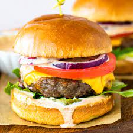

Cheeseburgers

Charbroiled cheeseburger with American Cheese
A proper cheeseburger should be grilled on a BBQ and should be nice and juicy on a soft bun.
Ingredients
- Hamburger meat
- Tomato
- Lettuce
- Onion
- Pickles
- Buns
- Mustard
- Ketchup
- Mayo
Steps
- Grill burger patties on BBQ until cooked to desire.
- Add cheddar or american cheese on patty just before taking them off the grill so it has a chance to melt.
- Put buns on grill to toast for a minute or so.
- Spread desired condiments on buns.
- Top burger off with lettuce, tomato, onions, and pickles.